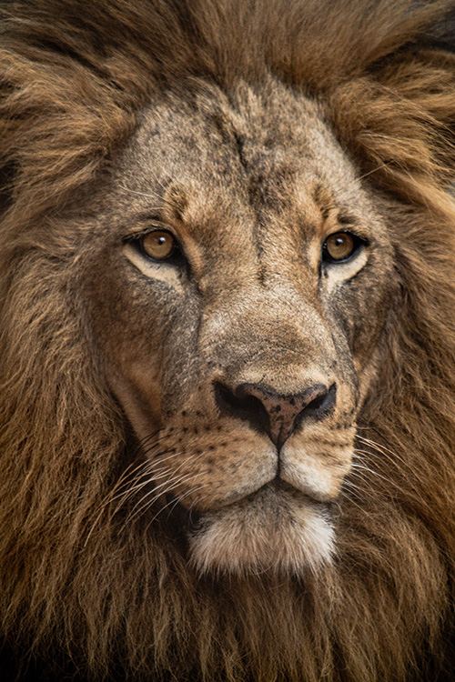
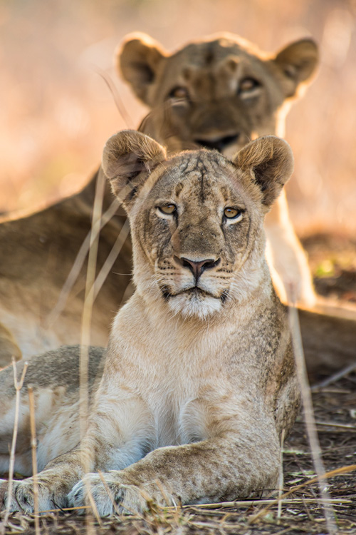
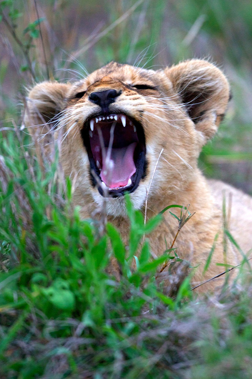

The world of the African lion
African lions live in open savanna ecosystems where grasslands, scattered trees, and seasonal water sources shape daily life. Unlike most big cats, lions are highly social animals that live in family groups known as prides. Cooperation allows them to defend territory, raise cubs, and hunt larger prey across the plains.
Within each pride, complex relationships develop between related females, cubs, and a small number of dominant males. Their survival depends on healthy habitats, abundant prey, and the ability to move across large connected landscapes.
-

Territory Photo by Luke Tanis -

Lion Pride Photo by Vince Fleming -

Cub Behavior Photo by Kurt Cotoaga
Life within the pride
Lions are one of the few big cats that live in stable social groups. Female lions often remain in the pride where they were born, forming a cooperative network that hunts together and protects young cubs.
Male lions typically defend territory and protect the pride from rival males. When new males take over, the structure of the pride can change dramatically, shaping the future of the group.
| Category | Average |
|---|---|
| Pride size | 10–15 lions |
| Male weight | 330–420 lbs |
| Female weight | 260–300 lbs |
| Territory range | 50–150 sq miles |
| Lifespan | 10–14 years |
Why lions matter to ecosystems
As apex predators, lions help maintain balance across savanna ecosystems. Their presence influences prey populations, grazing patterns, and the health of the entire landscape.
-
Prey balance Lions regulate populations of grazing animals, which helps prevent overgrazing and supports plant diversity.
-
Territory structure Lion territories shape wildlife movement patterns across the savanna.
-
Habitat protection Protecting lions often protects large landscapes that many species depend on.
-
Biodiversity impact Healthy lion populations signal a functioning and balanced ecosystem.